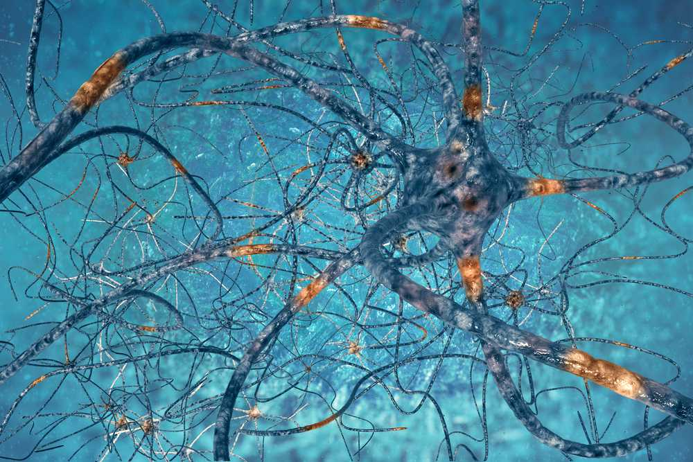

Like mindfulness, neuroscience (brain science) is becoming a bit of a buzz word. This is because of its massive advances in recent years. Scientists used to believe that the human brain did not change after it reached adulthood. Now they've found that this could not be further from the truth! Our brains are constantly changing and growing.
Neuroscience is all about the neurons within our brains. Neurons are nerve cells that communicate with each other. Every human brain has around 100 billion. Depending on what we feel, think, experience, and how we behave, certain neurons get stimulated as they connect with each other. As we do this it creates different 'templates' of neural pathways. The more these neural templates are used, the thicker the pathways get.
So if you start playing the piano, you're creating a neural template to do so. The more you practice this, the thicker the neural template gets.
This is fascinating because this strengthening of neural pathways is how the brain changes and actually grows in particular areas. This growing of the brain has been termed neuroplasticity.

Neuroplasticity? So what?
So, how does all this fit in with what we've been talking about, like quick-fix strategies? Well our brains adapt to the behaviours we do. As we do this, the associated neural template for a behaviour is strengthened.
This strengthening applies to anything we do - whether it's in our best interest or not.
This is good news for you. Why? Because this means that you can strengthen the neural templates within your brain for taking action towards things that are meaningful, instead of meaningless. And in doing so, you are changing your brain to grow and adapt towards patterns of behaviour that serve you.
By practicing mindfulness, we make space for distracting thoughts, feelings and urges, instead of being controlled by them. Every time you practise the guided meditations within this app you are strengthening a neural template of gentle resilience within your brain, away from distractions and towards the things that are meaningful to you.
How your brain changes with mindfulness
Practicing mindfulness trains our brain to change. Here are three of the many ways that the brain changes by practicing mindfulness:
1) An increase in size of a part of the brain known as the anterior cingulate cortex. It helps regulate our focus of attention and allow for more flexibility with our thoughts, including decision making.
2) An increase in areas of the prefrontal lobe. These are primarily responsible for functioning such as problem solving and regulating our emotions. This helps us respond accordingly instead of react mindlessly.
3) The amygdala is known as our brain’s “fight or flight” centre. It’s what is responsible for our stress because it’s responsible for activating our fear and anxiety. Studies show that the amygdala decreases in volume after a few weeks of mindfulness practice. It also shows a weakening of the connections between the amygdala and the prefrontal lobe (above) meaning we have less of a tendency to react.
This means there's huge potential here for self-growth and change if you want it. It just takes some willingness to practice. And, for me, knowing this certainly helps with the willingness.